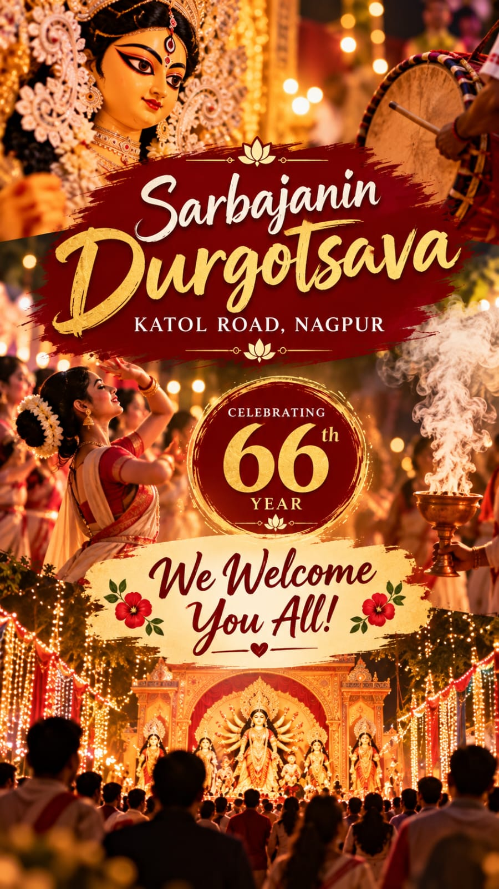

Your festival guide
Durga Pujo begins soon
Puja timings, cultural programmes and visitor information in one place.

শারদীয়ার শুভেচ্ছা · Celebrating 66 years
Welcome to Sarbajanin Durgotsava 2026—seven days of devotion, culture, music and community at Katol Road, Nagpur.
Your festival guide
Puja timings, cultural programmes and visitor information in one place.
Visit the pujo
Opposite Police Line Takli in Seminary Hills. Tap directions and Google Maps will start from your location.
Venue
Google Maps destination: CPWD GROUND / Katol road Durga pujo
14–21 October
Choose a day to see puja timings, cultural programmes and moments from the celebration.
Prasad and bhog
Distribution follows anjali.
Cultural programmes
15–20 October, from 8:00 PM onwards.
After Durgotsava
25 Oct 2026
Sunday · 8:30 PM
11 Feb 2027
Puja 9:30 AM · Anjali 10:30 AM
Feel the celebration
Videos load only when you choose to play them, keeping the guide quick on mobile data.
In the news
The Hitavada featured our celebration in its Nagpur City Line edition on 29 September 2025.
Our supporter
Meet one of the local supporters helping bring this year’s celebration to life.
People behind the pujo
Explore the society office bearers and Durgotsava teams listed in the supplied committee booklet.
We’re here to help
Call or message the organising team. WhatsApp will open with a ready-to-edit greeting.
Help line 1
+91 95034 51901Help line 2
+91 99703 51985Help line 3
+91 98230 90939Help line 4
+91 97661 10818